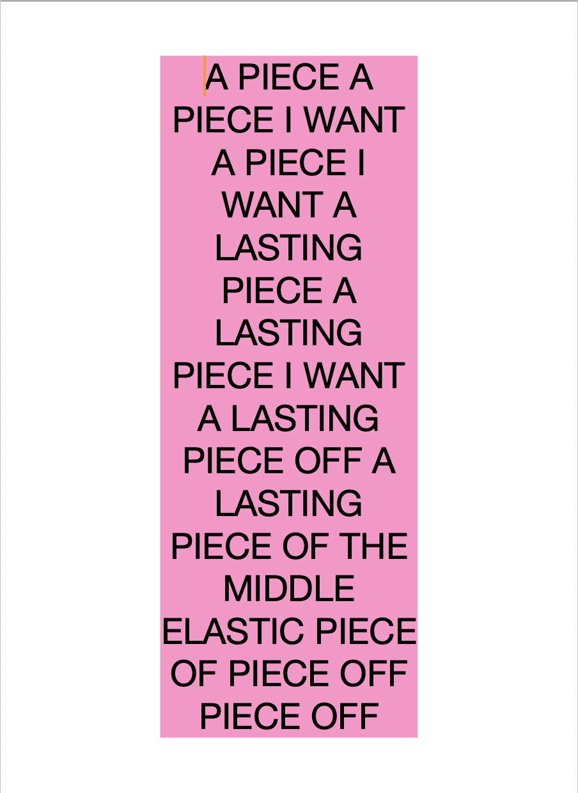

Know What You Want to Know: Closing
Dear Friends,
We would like to warmly invite you to the official closing of the exhibition Know What You Want to Know, this Saturday April 4, 4-6pm at Compound Yellow.
Two very special guests will be joining us: Kat Bawden and Maya Nguyen, who will perform their new pieces:
Maya Nguyen: “Peace & Carrots” at 4:30pm a text-based performance of disordered words, meanings, and moods.
Kat Bawden: “Empty Bell” at 5:00pm a performance about disaster, control, and bells.
Please join us for an evening of conversation, refreshments, and bites.
New works trace how accidents and external forces become part of personal realities. Landscapes and bodies mutate into algorithmic instructions – mediated or lived, aligned to shifting social logics, with reality scaled to fit. The artists ask through collage and video, weaving and carving: What is a promise never kept, an armistice of gazes, an ignored apology? The exhibition is informed by times of unrest, and unseen forces; they consider that an invitation to exit requires rehearsing the welcome again.
Aleksandra Wałaszek received an MFA in Fiber and Material Studies from the School of the Art Institute of Chicago (2024) and an MA in Media Arts from the Eugeniusz Geppert Academy of Art and Design in Wrocław (2011). She is a recent recipient of the Fulbright Graduate Student Award, and ReSide Award. Her works have been exhibited nationally and internationally at various venues, and has participated in artist residencies. Her practice examines the coexistence of beauty and crudeness, hospitality and hostility, references architecture, and sources archives.